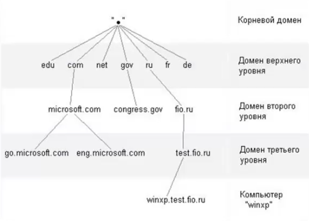

Domain Name System (система доменных имён) — компьютерная
распределённая система для получения информации о доменах. Цель DNS - выяснить какой IP адрес
принадлежит запрашиваемому сервису.
Чаще всего используется для получения IP-адреса по имени хоста
(компьютера или устройства), получения информации о маршрутизации почты и/или обслуживающих
узлах для протоколов в домене (SRV-запись).
Для взаимодействия использует порт 53/TCP, 53/UDP.
Стандартные запросы разрешения имён используют UDP, а процессы
синхронизации баз имён используют ТСР, если объем передаваемых данных велик.
Один раз разрешив доменное имя, компьютер его записываем в файл под
название hosts и оно кэшируется, чтобы не нагружать DNS сервера
Иерархическая структура DNS
Виды DNS запросов
Forward lookup (прямой просмотр DNS) - какой IP
ассоциирован с запрашиваемым DNS
Reverse lookup (обратный просмотр DNS) - какой DNS
ассоциирован с запрашиваемым IP
Зоны DNS
Primary DNS - зона, где хранятся все
записи домена
Secondary DNS - второстепенная зона DNS, служащая для
резервирования основной зоны (бэкап), записи там доступны только для чтения
Stub DNS zone - зона-заглушка,
информация в этой зоне позволяет вашему DNS напрямую связываться с DNS сервером
Типы записей DNS
SOA (Start of Authority) - начальная запись для зоны
DNS, указывающая на каком сервере хранится эталонная информация о домене и содержащая информацию
лица, ответственного за данную зону и TTL(как долго хранить запись в кэше) записей DNS
A/AAAA - Address record, или запись адреса. Связывает
имя хоста с адресом протокола IPv4/IPv6
NS (Name Server) - указывает на DNS сервер домена
MX (Mail Exchange) - почтовый обменник, указывающий на
сервер(а) обмена почтой для данного домена
SRV (Server Selection) - указывает на сервера для
сервисов, например Active Directory
PTR (Pointer) - обратная DNS запись. Она связывает IP
адрес с его каноническим именем
DHCP
Dynamic Host Configuration Protocol (протокол динамической
настройки узла)— прикладной протокол, позволяющий сетевым устройствам автоматически
получать |Р-адрес и другие параметры, необходимые для работы в сети ТСР/IР. Работает по модели
«клиент-сервер».
Для взаимодействия используются порты
67, 68/UDP . Порт 67 слушает сервер, а порт 68 - клиент.
Изначально, компьютер не знает где находится DHСP
сервер, поэтому он генерирует широковещательный запрос, такой запрос отправляется на все устройства в
локальной сети. Сервер DHCP, увидев такой запрос отвечает клиенту, в нем содержаться такие параметры
как: адрес, маска сети, шлюз по умолчанию, адрес сервера, время аренды(время на которое
компьютер арендует адрес), имя домена и тд. После полученного ответа компьютер
подтверждает, что возьмет в аренду предложенный адрес. После чего DHCP сервер подтверждает, что адрес
зарезервирован клиентом.
Групповые политики
Основная цель — возможность централизованно
управлять пользователями и компьютерами в домене
Локальная групповая политика - применяется к одному
конкретному компьютеру
Доменная групповая политика - применяется к выбранным
объектам домена
Применения групповой политики
Gpupdate - обновить политики
Gpresult - отображение результирующей политики (RSoP) для
указанного пользователя и компьютера
Основные GPO для SIEM
При создании домена Windows многие операции домена не монтируются
С помощью политик можно настроить полноценное логирование домена
windows
Такая политика необходима для выявления большинства интересных событий
для сотрудников центра мониторинга
{kind=link}
{kind=link}
{kind=link}